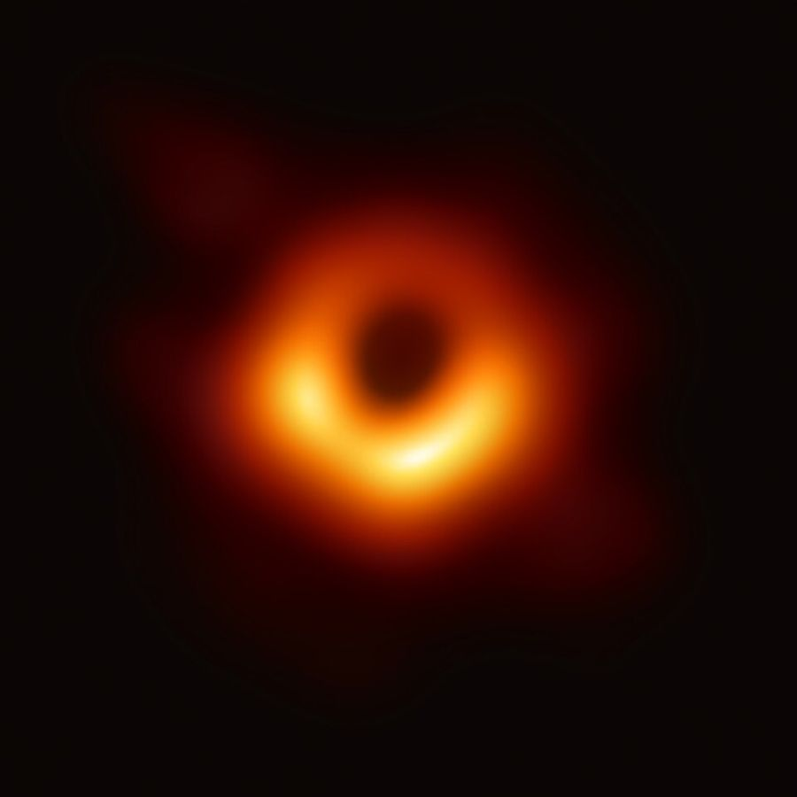

중력은 힘일까, 휘어진 시공간일까?
읽기 · 등가 원리, 블랙홀, 중력 시간 지연창문 없는 엘리베이터 안에서 몸무게를 재니 평소보다 무겁게 나옵니다. 엘리베이터가 위로 가속하는 중일까요, 아니면 중력이 더 센 행성에 와 있는 걸까요? 안에서는 이 둘을 구별할 방법이 있을까요?
1등가 원리
질량에는 두 얼굴이 있습니다. 힘을 받았을 때 얼마나 가속하기 어려운지를 나타내는 관성 질량(F = ma의 m)과, 중력을 얼마나 세게 받는지를 나타내는 중력 질량(GMm/r²의 m)입니다. 모든 물체가 질량과 관계없이 같은 가속도로 떨어진다는 것은 이 둘이 같다는 뜻이고, 실험은 이를 10조분의 1보다 정밀하게 확인했습니다.
아인슈타인은 여기서 더 나아가, 가속하는 계와 중력이 있는 계는 그 안에서 어떤 실험을 해도 구별할 수 없다고 보았습니다(등가 원리). 그렇다면 가속하는 엘리베이터 안에서 수평으로 쏜 빛이 바닥 쪽으로 휘어 보이듯, 중력이 있는 곳에서도 빛이 휘어야 합니다. 1919년 개기 일식 때 태양 가까이 보이는 별의 위치가 실제로 조금 어긋난 것이 관측되었습니다.
2휘어진 시공간
일반 상대성 이론에서 질량은 주변의 시공간을 휘게 하고, 물체는 그 휘어진 시공간에서 가장 곧은 길을 따라 움직입니다. 행성이 태양 둘레를 도는 것은 태양이 끈으로 당겨서가 아니라, 태양 둘레의 시공간이 휘어 있기 때문이라고 설명합니다. 흔히 무거운 공을 올려 움푹 들어간 고무막으로 비유하지만, 이 그림은 공간의 휘어짐만 보여 줄 뿐 시간의 휘어짐은 담지 못하는 비유입니다.
3블랙홀


탈출 속도 v = √(2GM/R)은 같은 질량을 작은 반지름에 모을수록 커집니다. 탈출 속도가 빛의 속력 c가 되는 반지름 R = 2GM/c²보다 작게 질량이 뭉치면, 빛조차 빠져나오지 못합니다. 이것이 블랙홀이고, 이 경계를 사건 지평선이라 합니다. 태양을 블랙홀로 만들려면 반지름 약 3 km, 지구라면 약 9 mm로 압축해야 합니다. (이 계산은 뉴턴 역학의 탈출 속도를 빌린 어림이지만, 일반 상대성 이론으로 정확히 계산해도 같은 값이 나옵니다.)
4중력 시간 지연과 GPS
일반 상대성 이론은 중력이 강한 곳일수록 시간이 느리게 간다고 예측합니다. 지표에서 약 2만 km 위를 도는 GPS 위성은 지표보다 중력이 약해 시계가 하루에 약 45 μs 빨리 갑니다. 반대로 빠르게 움직이므로 특수 상대성 이론의 시간 지연으로 하루 약 7 μs 느려집니다. 합치면 하루 약 38 μs 빨라지는데, 이를 보정하지 않으면 위치 오차가 하루에 10 km 넘게 쌓입니다. 이 절의 GPS 카드에서 직접 계산해 볼 수 있습니다.
판단일반 상대성 이론이 뉴턴의 만유인력을 ‘틀렸다’고 버린 것은 아닙니다. 중력이 약하고 속력이 빛보다 훨씬 느린 일상과 태양계 대부분에서는 두 이론의 예측이 거의 같아, 인공위성 궤도도 대개 뉴턴 역학으로 계산합니다. 차이는 블랙홀 근처, 정밀한 시계, 빛의 경로처럼 극단적이거나 매우 정밀한 경우에 드러납니다.
확인조건이 달라지면
우주 공간에서 로켓이 9.8 m/s²으로 가속하고 있습니다. 창문 없는 선실 안에서 사과를 놓으면 어떻게 보일까요?